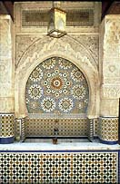
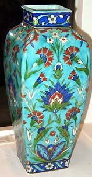
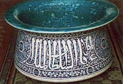
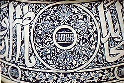
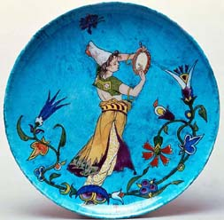

Text courtesy Saudi
Aramco World.
In
the mid-19th century, Europe's artistic and fashionable circles
were enthralled by a vogue for all that was Oriental. Visitors
to London Galleries and Paris salon exhibitions became familiar
with Middle Eastern desert and village life, with Arab, Persian
and Turkish costume and decorative arts as they were recorded
- or sometimes imagined - on canvas or in watercolor by European
artist-travelers. De rigueur for Victorian ladies were
the sumptuous, colorfully patterned paisley shawls, while loose,
cool pajamas, as worn in the Islamic world, were adopted into
the well-dressed European male's wardrobe. European homes featured
the new "divan" associated with life à l'orientale
- furniture that invited lounging and relaxation - and the Turkish
bath was introduced to Paris.
The preferred jewelry
motif was the so-called Algerian knot.
Against this backdrop,
the acquisition of a single brilliantly colored Islamic tile
prompted French ceramist Joseph-Théodore Deck to explore
and revive Middle Eastern ceramic techniques in the creation
of his own unique art.
Deck, the first of
the artist-potters in what was to become a widespread revolution
in European ceramics, was born in the Alsatian town of Guebwiller
in 1823. He dreamed of becoming a sculptor, but his modest background
dictated a more prosaic vocation. Deck apprenticed as a maker
of ceramic stoves - large, room-warming structures of ironand
plaster often elaborately covered with ceramic tiles - and traveled
to Germany, Austria and Hungary to learn his trade. Moving to
Paris in1847, he worked as a foreman in a ceramic stove factory.
But by 1856, Deck
had established his own decorative faïence workshop in
partnership with his brother Xavier and nephew Richard. Painters
and sculptors frequented "Atelier Deck," which became a design
laboratory promoting ceramics as an art form in the face of
prevailing industrial practices.
For
Théodore Deck, the 1850's were an exciting decade of technical
research and experimentation. Paradoxically, Deck looked back
into history to develop new and improved ceramic techniques.
He began by exploring lost Renaissance processes, making elaborate
ceramics resembling those of Frances Saint-Porchaire factory,
extravagantly decorated with inlaid strapwork patterns and incrustation.
Next, tantalized by the secrets locked within the luminescent
glaze of his one Islamic tile, Deck began to unravel the mysteries
of centuries-old ceramics techniques of that culture. He wanted
to know more.
Since the Middle
Ages, Islamic ceramics had been admired in Europe as much for
their luscious, rich glazes as for their abundant and colorful
decoration (See Aramco
World,
March-April 1992). Early Islamic potters initially developed
their skills from the techniques of their ancestors, but as
long-distance trade and contacts flourished, along the Silk
Roads and by other routes, they adopted many Chinese techniques
to achieve a superior product, and added others of their own.
Many Islamic inventions - tin-glazed earthenware, luster and
underglaze painting - were in turn crucial to the development
of ceramics of other cultures.
Deck discovered that
the brilliant color in Islamic ceramics is due to a base coating
of white alkaline slip containing tin oxide. The decoration,
done in enamel colors, is covered with a transparent glaze,
and produces glowing, translucent effects. After much trial
and error, Deck succeeded in rivaling the vivid palette of colors
characteristic of Islamic ceramics. He created "bleu de Deck,"
his famous deep-turquoise blue glaze, using potash, carbonate
of soda and chalk.
As interested in
decoration as in technique, Deck found prototypes for his "Persian"
faïence (called "Rhodian" in the 19th century) in ceramics
that were in fact Turkish, specifically from the famous Iznik
manufactory in the 16th and 17th centuries. At the time, Iznik
ceramics were celebrated throughout the Islamic world for the
astonishing depth, brilliance and luminosity of their glazes
and colors; they were often boldly decorated with floral motifs
whose stylized forms resembled those found on Persian carpets.
They recalled the Islamic love of gardens, with charming tendrils,
leaves, blossoms and fruits -pomegranate, carnation and tulip
- swaying gracefully across the surfaces of dishes, vases and
tiles. Sprightly animals and highly decorative Arabic calligraphy
also flickered across their lustrous surfaces, and Iznik ceramists
formed beguiling arabesque patterns with flattened leaves, limbs
and letters.
Deck sometimes copied
directly from Iznik ceramics, but he also created variations,
assimilating motifs from several examples into a single object.
While Deck's designs are generally more symmetrical than those
of his prototypes, it is nevertheless sometimes possible to
identify the very pieces that inspired him.
Islamic source material
for Deck to study was hard to come by in 19th-century France.
A small but steadily increasing stream of hardy European adventurers
braved the perils of contemporary travel to experience the wonders
of Turkey, Persia and North Africa. Back home, their exotic
souvenirs perforce became touchstones of Islamic culture and
sparked the European imagination.
One of the first
artist-travelers to the region, Jules-Robert Auguste (1789-1850),
returned to Paris with curios and artifacts of every description,
selected from dozens of bazaars and merchants. At his frequent
"at homes," Auguste displayed costumes, carpets, weapons, ceramics
and glass in a dazzling Thousand-and-One-Nights setting to his
spellbound artist friends, including Théodore Géricault,
painter of "The Raft of the Medusa" - Horace Vernet,
who was to produce the battle paintings at Versailles; and Eugène
Delacroix, greatest of the French romantic painters. Auguste's
souvenirs often found their way into his guests' paintings as
props, and Orientalist subjects - on the increase in the annual
paintings salons - now took on an air of verisimilitude, at
least as far as artifacts were concerned.
Serious
collections of Islamic artifacts began to be assembled in Europe.
Nineteenth-century museums took a didactic approach to acquisitions,
and avidly collected study materials for public instruction
as well as to provide inspirational models to further the applied
arts. The extensive medieval and Renaissance collections of
Paris's Musée de Thermes - Hôtel de Cluny, opened
to the public in 1844, provided Deck with Islamic models to
emulate, and he recorded that its collection contained 132 examples
of "Persian" ceramics.
Some Islamic artifacts
had also filtered into France during the Crusades, and fragile
survivors, along with a handful of fine examples of ceramics,
metalwork and glass acquired over the years, had found their
way into the French royal collections. These collections formed
the basis of those of the Louvre Museum, another resource for
19th-century craftsmen.
Deck most frequently
referred to the collection of the National Porcelain Museum
at Sèvres, outside Paris. Open to the public since 1824,
this specialized museum continually added to its large and important
study collection of ceramics from around the world. Underscoring
its avowed mission to provide models for industry, the museum
complex even featured an applied arts school. It was here that
lustrous Islamic glazes gave up their secrets and the sparkling
enamel colors of exquisitely depicted Middle Eastern flora and
fauna seduced Joseph-Théodore Deck.
In the same pedagogical
spirit as the museums, private collectors lent objects to public
exhibitions. On several occasions throughout the 1860's, privately-owned
Islamic works of art were displayed through the auspices of
the newly formed (1864) and commercially-minded Union Centrale
des Beaux-Arts Appliqués à l'Ilndustrie,
the forerunner of Paris's Musée des Arts-Decoratifs. Important
collectors of the period included Baron Alphonse de Rothschild
and Charles Schefer, Emperor Napoleon III's Arabic interpreter.
Ironically,
source material was also supplied by Deck's competition. Ceramist
Eugène-Victor Collinot and his collaborator Adalbert de
Beaumont, who had first encouraged Deck to look to Islamic prototypes,
joined Deck in his early exploration of Islamic ceramics. In
1859, Collinot and Beaumont, themselves collectors of Islamic
artifacts, published Recueil de dessins pour l'art et l'industrie
(A Collection of Designs for Art and Industry), which contained
detailed illustrations of Islamic ceramics and glass seen in
their travels.
This influential
design book revealed the arts of the Islamic world as a new
source of inspiration to a receptive and enthusiastic audience
of French artists and craftsmen. In its pages Deck found a 13th-century
enamel and gilt glass mosque lamp from Cairo - part of the Rothschild
collection - lavishly decorated with ornament and calligraphy.
Deck translated the bulbous lamp with its wide-flaring neck
into a pair of ceramic vases, replacing its calligraphy with
more floral ornament. Likewise, he converted a medieval Syrian
glass vase illustrated in the Recueil into a ceramic
vase alive with flora and fauna of Persian inspiration. Glazed
in white, black, red and cobalt, the vase's swelling, attenuated
form is enlivened with acanthus, tiny gazelles and bold interlaced
arabesque patterns.
In 1863, Collinot
and Beaumont founded their own faïence factory specializing
in Islamic-inspired wares. Located in the Bois de Boulogne,
the factory caused a sensation with its decoration of blue and
white Islamic dishes. The competition with Deck was truly on.
Nineteenth-century
industrial exhibitions invited such competition. Heavily attended
and the subject of intensive commentary and discussion they
were the manifestation of an era of unprecedented official sponsorship
of the applied arts. Held almost annually, they provided a forum
for exhibitors to present to the public their best and newest,
achievments in the name of progress. His experiments having
come to fruition, Deck presented his first "Persian" faïence
at Paris’s 1861 Exposition des Produits de l'Industrie.
His efforts were rewarded with a silver medal and much critical
praise for his "fine quality" and "intensity of tones."
Deck also met with
success the following year when he introduced metallic luster
glazes, derived from Hispano-Moresque, or Andalusian, wares,
at London's 1862 International Exhibition. While these vitreous,
iridescent glazes were first popularized in Syria and Persia,
they became inextricably linked with Spanish ceramic centers
such as Malaga and Valencia. Arabic inscriptions and floral
and figural motifs predominated within an elaborate overall
design scheme. Deck's prize-winning example was a monumental
vase copied from a model found in the Alhambra, the splendid
14th- and 15th-century Moorish palace in Granada (See Aramco
World,
May-June 1967). The vase's ornate designs were provided
by Baron Davillier, a renowned scholar of Hispano-Moresque ware
and a frequent advisor both to Deck and to the National Porcelain
Museum at Sèvres.
The London exhibition
brought Deck important official recognition: The recently established
South Kensington Museum (now the Victoria and Albert Museum),
an active patron of the applied arts, bought three of Deck's
works from the exhibition. Here also, Deck's brilliant colors
caused widespread comment, especially the "bleu de Deck." Its
"dazzling hues seemed like electric sparks," according to one
source.
Then
in 1863, the first year of their factory's operation, Collinot
and Beaumont exhibited their own "Persian faïence" at the
Union Centrale, where their work, like Deck's, was awarded a
first-class medal. Both factories competed again at the Paris
1867 Exposition Universelle and were awarded silver medals.
While critical comparison was inevitable, it was uncharitable
of Deck to snipe that Collinot's "Persian wares were improperly
and unauthentically decorated."
Islamic art also
provided contemporary French glass artists with a new source
of inspiration. Philippe-Joseph Brocard began, his career as
France's first art glass-maker by reviving the tedious process
used to make Islamic enameled and gilded glass of the 13th and
14th centuries. Brocard, who first exhibited his work at the
Paris 1867 Exposition Universelle, developed a cloisonné technique,
outlining his designs in thick cells of gold or enamel paint.
He shared many of Deck's sources-plates from Collinot and Beaumont's
Recueil, Egyptian and Syrian mosque lamps and beakers
in the Cluny Museum, and works of art that were part of various
private collections.
Like Deck, too, Brocard's
design repertory consisted largely of floral and geometric ornament
and Arabic calligraphy. But he could not read Arabic and his
calligraphy, understandably, often contained errors. It thus
had only a decorative function on his glassware, lacking the
intellectual or didactic element that Arabic calligraphy usually
contributes to art objects of Middle Eastern provenance.
Brocard in turn introduced
Emile Gallé to the enameled glass of Islam. Better
known today for his turn-of-the-century art-nouveau glass, Gallé's
early work of about 1880 frequently borrowed motifs from Indo-Persian
miniatures and Islamic calligraphy. But instead of arduously
trying to copy Arabic inscriptions which he too could not read,
Gallé simply invented a fantastic Islamicate French-language
alphabet with which he inscribed mottoes on his glass in bright
colors.
Deck explored other
cultures later in his career. In 1884, he exhibited flambé
glazes in imitation of Chinese sang de boeuf. Deck's
celadon glaze, used over designs incised in the body of the
ceramic, also referred to Chinese origins, as did his many experiments
with porcelain and with decorative craquelure effects. The asymmetrical
designs and motifs of Japanese ceramics that were exhibited
at Paris's 1878 Exposition Universelle were promptly reflected
in Deck's offerings in the 1880 Union Centrale exhibition. No
less exotic, Venice's glittering Byzantine mosaics inspired
Deck to develop an underglaze gold to be used for background.
Because of his range
of technical innovations and accomplishments, Deck was made
art director of the Sèvres manufactory in 1887, the first
ceramist to assume this prestigious post. In the same year,
he published an exhaustive treatise called La Faïence.
Half-historical, half-technical, it testified to Deck's debt
to the potters of Islam. Deck continued to develop and improve
the ceramic art at Sèvres, while his brother Xavier was
charged with running the Paris workshop. After his untimely
death only four years later, Deck was buried in Montparnasse
Cemetery, beneath a tomb Xavier had appropriately decorated
with floral ornament in colored faïence.
Deck's influence
spread through the many artists and sculptors who worked in
his studio or in collaboration with him. In the 1878 exposition,
Deck exhibited wall plates with designs by, among others, ceramist
Albert Anker, painter Henri Joseph Harpignies and caricaturist
and lithographer Ferdinand Bracquemond, who popularized the
Japonisme movement in French art. Even celebrated society
painter Paul César Helleu once designed plates for the
workshop.
But it was Deck himself
who began the ceramic revolution. He was the first to explore
historical styles in the name of progress in ceramics - a process
that continues today (See Aramco
World,
May-June 1990). Increasingly, a concern for the values and
techniques of handicraft began to make itself felt in all the
applied arts in his day, and that concern also continues to
have repercussions in our own time. At the height of the industrial
revolution, Deck returned to the artisanal tradition, laying
the ground for the widespread art pottery movement of the next
two generations. By the 1890's, that movement was widespread
in Europe and the United States, and it had become commonplace
to look to non-European prototypes for inspiration in technique
and decoration. With Deck's vindication of the value of historical
survivals, his work marked the beginning of a new era in faïence.
Frederica
Todd Harlow is an art historian who writes and
lectures on revival styles in the decorative arts.